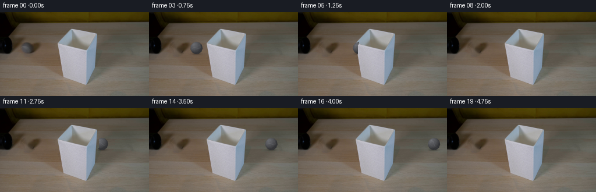
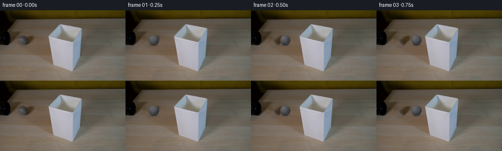

CODING AGENTS AS PIXEL WORLD MODELS
traex/GPT-5.6-Sol · 0146
点击播放 · 原生 RGB 像素
逐轮保存的候选
回放视频、检查图与代码变化。
每份候选均可单独播放。实际图片检查记录在下方工具轨迹中。
候选 01播放与检查图
点击播放 · 原生 RGB 像素


展开代码变化
--- 上一保存版本
+++ 本次保存版本
@@ -0,0 +1,156 @@
+from pathlib import Path
+
+import cv2
+import numpy as np
+from PIL import Image
+
+import artifact_io
+
+
+HERE = Path(__file__).resolve().parent
+H, W = 144, 256
+
+
+def smoothstep(edge0, edge1, x):
+ t = np.clip((x - edge0) / (edge1 - edge0), 0.0, 1.0)
+ return t * t * (3.0 - 2.0 * t)
+
+
+def clean_plate(first):
+ """Remove the ball in frame zero while retaining the photographed texture."""
+ # The slightly generous soft-edged mask includes the ball's felt fringe and
+ # its small contact shadow. TELEA interpolation works especially well here
+ # because this is a low-frequency, finely mottled wooden surface.
+ yy, xx = np.mgrid[:H, :W]
+ ball = ((xx - 46.0) / 12.1) ** 2 + ((yy - 61.0) / 11.8) ** 2 < 1.0
+ contact = ((xx - 47.0) / 12.7) ** 2 + ((yy - 70.2) / 3.1) ** 2 < 1.0
+ mask = np.where(ball | contact, 255, 0).astype(np.uint8)
+ plate = cv2.inpaint(first, mask, 4.0, cv2.INPAINT_TELEA)
+
+ # Inpainting is intentionally smooth. Put back a very restrained version
+ # of the camera/render grain, estimated only from the neighboring table.
+ blur = cv2.GaussianBlur(first, (0, 0), 1.15)
+ residual = first.astype(np.float32) - blur.astype(np.float32)
+ texture = np.roll(residual, (17, 23), axis=(0, 1))
+ soft = cv2.GaussianBlur(mask, (0, 0), 1.8).astype(np.float32) / 255.0
+ plate = np.clip(plate.astype(np.float32) + texture * soft[..., None] * 0.28,
+ 0, 255).astype(np.uint8)
+ return plate
+
+
+def lampshade_foreground():
+ """Mask of the lampshade, which stands in front of the ball's track."""
+ mask = np.zeros((H, W), np.uint8)
+ # The boundary follows the real silhouette in first_frame.png. Keeping it
+ # as foreground gives convincing partial disappear/reappear at both edges.
+ contour = np.array([
+ [122, 27], [134, 29], [158, 34], [169, 39], [168, 96],
+ [164, 107], [157, 117], [150, 124], [137, 128], [121, 123],
+ [110, 115], [104, 102], [103, 57], [110, 40]
+ ], np.int32)
+ cv2.fillPoly(mask, [contour], 255)
+ return mask.astype(np.float32) / 255.0
+
+
+def ball_layers(cx, cy, spin):
+ """Return a realistically shaded, rotating grey felt tennis ball and shadow."""
+ yy, xx = np.mgrid[:H, :W].astype(np.float32)
+ dx, dy = xx - cx, yy - cy
+ r = 10.4
+ rho = np.sqrt(dx * dx + dy * dy)
+
+ # A minutely irregular silhouette suggests the nap of tennis-ball felt.
+ theta = np.arctan2(dy, dx)
+ nap = 0.20 * np.sin(theta * 11.0 + 0.8) + 0.10 * np.sin(theta * 17.0 - 1.4)
+ alpha = 1.0 - smoothstep(r - 0.72 + nap, r + 0.66 + nap, rho)
+ inside = rho < r + 1.0
+
+ nx = dx / r
+ ny = dy / r
+ nz = np.sqrt(np.maximum(0.0, 1.0 - nx * nx - ny * ny))
+
+ # Fixed upper-left studio light: markings rotate, illumination does not.
+ light = (-0.48 * nx - 0.60 * ny + 0.64 * nz)
+ diffuse = np.clip(light, 0.0, 1.0)
+ rim = np.clip((1.0 - nz) * 0.9, 0.0, 1.0)
+ intensity = 55.0 + 43.0 * diffuse - 7.0 * rim
+ spec = np.power(np.clip(diffuse, 0, 1), 12.0) * 8.0
+ intensity += spec
+
+ # Felt texture rotates rigidly with the rolling ball. This analytic grain
+ # avoids temporally independent flicker.
+ cs, sn = np.cos(spin), np.sin(spin)
+ qx = cs * dx + sn * dy
+ qy = -sn * dx + cs * dy
+ felt = (1.7 * np.sin(qx * 2.37 + qy * 0.71) +
+ 1.2 * np.sin(qx * 0.93 - qy * 2.11 + 1.3) +
+ 0.65 * np.sin(qx * 4.41 + qy * 3.17))
+ intensity += felt * np.clip(nz, 0.25, 1.0)
+
+ # The characteristic curved tennis-ball seam, painted in object space.
+ seam_curve = qy - (2.1 * np.sin(qx * 0.34) - 0.15 * qx)
+ seam = np.exp(-0.5 * (seam_curve / 0.62) ** 2)
+ seam *= smoothstep(9.7, 7.7, np.abs(qx))
+ # A second returning arc near the opposite hemisphere makes an understated
+ # tennis-ball S pattern rather than a generic stripe.
+ seam2_curve = qx + 7.35 - 1.35 * np.sin(qy * 0.43)
+ seam2 = np.exp(-0.5 * (seam2_curve / 0.58) ** 2)
+ seam2 *= smoothstep(8.2, 5.8, np.abs(qy))
+ seams = np.clip(seam + 0.72 * seam2, 0.0, 1.0) * nz
+ intensity += seams * 10.0
+
+ rgb = np.empty((H, W, 3), np.float32)
+ rgb[..., 0] = intensity * 0.985
+ rgb[..., 1] = intensity * 0.995
+ rgb[..., 2] = intensity * 1.025 + 1.2
+ rgb = np.clip(rgb, 0, 255)
+ rgb[~inside] = 0
+
+ # A close, soft contact shadow pins the sphere to the tabletop. It moves at
+ # the same constant speed and is also hidden by the foreground lampshade.
+ ex = dx / 10.8
+ ey = (yy - (cy + r - 0.3)) / 2.25
+ shadow_a = np.exp(-2.05 * (ex * ex + ey * ey)) * 0.33
+ shadow_a *= (rho > r - 1.2).astype(np.float32) * 0.45 + 0.55
+ return rgb, alpha.astype(np.float32), shadow_a.astype(np.float32)
+
+
+def render():
+ first = np.asarray(Image.open(HERE / "first_frame.png").convert("RGB"), dtype=np.uint8)
+ if first.shape != (H, W, 3):
+ raise ValueError(f"unexpected first-frame shape: {first.shape}")
+
+ plate = clean_plate(first)
+ foreground = lampshade_foreground()
+ frames = []
+
+ for i in range(20):
+ if i == 0:
+ # Required exact source frame; no re-encoding or redraw.
+ frames.append(first.copy())
+ continue
+
+ # Constant real-time speed, left-to-right. The ball completes the table
+ # crossing and just clears the right edge near the end of the shot.
+ cx = 46.0 + 11.7 * i
+ cy = 61.0
+ spin = -(cx - 46.0) / 10.4
+ ball, alpha, shadow = ball_layers(cx, cy, spin)
+
+ # The ball rolls along the rear portion of the table and therefore
+ # passes behind the lampshade, rather than unrealistically over it.
+ visible = 1.0 - foreground
+ alpha *= visible
+ shadow *= visible
+
+ frame = plate.astype(np.float32)
+ # Neutral multiply shadow preserves the local wooden colour.
+ frame *= (1.0 - shadow[..., None])
+ frame = frame * (1.0 - alpha[..., None]) + ball * alpha[..., None]
+ frames.append(np.clip(np.rint(frame), 0, 255).astype(np.uint8))
+
+ return np.stack(frames, axis=0).astype(np.uint8)
+
+
+if __name__ == "__main__":
+ artifact_io.save(render(), HERE)
可观测工具轨迹
实际执行的命令与返回图片。
命令 1exit 0
/bin/bash -lc "cat GENERATION_RULES.md && printf '\\n---PROMPT---\\n' && cat prompt.txt"
命令 2exit 0
/bin/bash -lc "find . -maxdepth 2 -type f -printf '%p\\n' | sort && printf '\\nTOOLS\\n' && command -v ffmpeg || true && command -v python3 || true"
命令 3exit 0
/bin/bash -lc "python3 - <<'PY'
from PIL import Image
import numpy as np
im=np.array(Image.open('first_frame.png').convert('RGB'))
print(im.shape, im.min((0,1)), im.max((0,1)), im.mean((0,1)).round(1))
# rows avg and variation
for y in range(0,144,8): print(y, im[y].mean(0).round(0), im[y].std())
# quantized dominant colors
q=(im//16)*16
u,c=np.unique(q.reshape(-1,3),axis=0,return_counts=True)
for i in np.argsort(c)[-25:][::-1]: print(c[i],u[i])
PY"命令 4exit 0
/bin/bash -lc "python3 - <<'PY'
from PIL import Image
import numpy as np
A=np.array(Image.open('first_frame.png').convert('RGB')).astype(float)
# each char luminance downsample 4x4
Y=A@[.2126,.7152,.0722]
chars=' .:-=+*#%@'
for y in range(0,144,4):
print(''.join(chars[min(9,int(Y[y:y+4,x:x+4].mean()/256*10))] for x in range(0,256,4)))
PY"命令 5exit 0
/bin/bash -lc "python3 - <<'PY'
from PIL import Image
import numpy as np
A=np.array(Image.open('first_frame.png').convert('RGB')).astype(float); Y=A@[.2126,.7152,.0722]
for y in range(0,144,4):
vals=[]
for x in range(0,256,4):
v=Y[y:y+4,x:x+4].mean()
vals.append(' ' if v<20 else '.' if v<45 else ':' if v<70 else '-' if v<95 else '=' if v<120 else '+' if v<145 else '*' if v<170 else '#' if v<195 else '@')
print(f'{y:03}', ''.join(vals))
# Runs dark at selected scanlines
for y in [20,30,40,50,60,65,70,75,80,90,100,110,120,130]:
print('\\ny',y)
for th in [30,60,90,120,150]:
m=Y[y]<th; idx=np.where(np.diff(np.r_[False,m,False]))[0]; runs=list(zip(idx[::2],idx[1::2]-1)); print(th,runs)
PY"命令 6exit 0
/bin/bash -lc "python3 - <<'PY'
from PIL import Image
import numpy as np
A=np.array(Image.open('first_frame.png').convert('RGB')); Y=np.rint(A@[.2126,.7152,.0722]).astype(int)
print('lum by x every 8')
print('x ', ' '.join(f'{x:3}' for x in range(0,256,8)))
for y in range(16,137,4):print(f'{y:3}', ' '.join(f'{Y[y,x]:3}' for x in range(0,256,8)))
print('\\nRGB regional exact points')
for y in [40,50,60,70,80,90,100,110,120,130]:
print(y,[(x,A[y,x].tolist()) for x in range(0,256,16)])
PY"命令 7exit 0
/bin/bash -lc "python3 - <<'PY'
from PIL import Image
import numpy as np
A=np.array(Image.open('first_frame.png').convert('RGB')).astype(int);Y=np.rint(A@[.2126,.7152,.0722]).astype(int)
# codes by chroma: K lum<25, G max-min<9, wood w otherwise, object O bright gray x central
for y in range(35,85,2):
s=''
for x in range(20,105,2):
p=A[y:y+2,x:x+2].mean((0,1)); lum=p@[.2126,.7152,.0722]; chrom=p.max()-p.min()
if lum<20:c='K'
elif lum<40:c='k'
elif chrom<5:c='G'
elif chrom<12:c='g'
elif p[2]>p[0]+4:c='B'
elif lum<65:c='d'
elif lum<90:c='w'
elif lum<115:c='W'
else:c='L'
s+=c
print(f'{y:02} {s}')
print(' coordinates x20..103')
PY"命令 8exit 0
/bin/bash -lc "python3 - <<'PY'
from PIL import Image
import numpy as np
A=np.array(Image.open('first_frame.png').convert('RGB')).astype(int)
# show each pixel in region x35:73 y45:76 based category neutral and rgb brightness
for y in range(44,78):
s=''
for x in range(34,76):
r,g,b=A[y,x]; lum=(r+2*g+b)//4; c=max(r,g,b)-min(r,g,b)
if lum<25:z=' '
elif c<=4:z='@' # highly neutral
elif c<=8:z='#'
elif c<=14:z='O'
elif c<=22:z='o'
else:z='.' if lum<80 else ':' if lum<110 else '+'
s+=z
print(f'{y:02} {s}')
# values center patch
for y in range(50,72,3):
print('\\n',y)
for x in range(38,71,3): print(f'{x}:{A[y,x]}',end=' ')
PY"命令 9exit 0
/bin/bash -lc 'cat artifact_io.py'
命令 10exit 0
/bin/bash -lc "python3 - <<'PY' mods=['cv2','scipy','imageio','numpy','PIL'] for m in mods: try: x=__import__(m); print(m,'yes',getattr(x,'__version__','')) except Exception as e: print(m,'NO',e) PY"
命令 11exit 0
/bin/bash -lc "python3 generate.py && python3 - <<'PY'
import numpy as np
from PIL import Image
f=np.load('pixels.npz')['pixels']
print(f.shape,f.dtype)
a=np.array(Image.open('first_frame.png').convert('RGB'),np.uint8)
p=((f[:,:,0]>>16)&255).astype(np.uint8)
g=((f[:,:,0]>>8)&255).astype(np.uint8);b=(f[:,:,0]&255).astype(np.uint8)
print('frame0 exact',np.array_equal(a,np.stack([p,g,b],-1)))
for i in range(20):
im=np.array(Image.open(f'frames/{i:02}.png'))
d=np.abs(im.astype(int)-a.astype(int)); print(i, np.count_nonzero(np.any(d,2)), d.mean().round(2))
PY"命令 12exit 0
/bin/bash -lc "python3 - <<'PY'
from PIL import Image
import numpy as np
base=np.array(Image.open('first_frame.png')).astype(int)
chars=' .:-=+*#%@'
for k in [0,1,3,5,6,8,10,12,15,18,19]:
A=np.array(Image.open(f'frames/{k:02}.png')).astype(int)
Y=A@[.2126,.7152,.0722]
print('\\nFRAME',k)
# crop x 0:256, y44:80 at 4x2, luminance absolute (ball path)
for y in range(44,80,2):
print(''.join(chars[min(9,int(Y[y:y+2,x:x+4].mean()/256*10))] for x in range(0,256,4)))
PY"保存候选 1 份；完成命令 12 次；可验证图片返回 0 张。原始 API 响应与完整日志保留在本地。